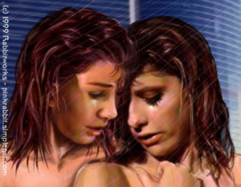

Buffy exhaled in relief as she stared at Willow where she stood in the open doorway to their shared dorm room. "You...uh...you’re back," she murmured, then ran a hand through her hair, which still bore the dirt and sweat of that night’s adventures. "I mean, you weren’t here when I got up this morning..." And I wanted to see you and hold you and make love to you again and I’m afraid you’re avoiding me, but those last words remained unspoken, held in check by the Slayer’s fears and uncertainties. Things had moved so swiftly and so unexpectedly the night before that she had no idea exactly where they stood. Of all people, Buffy Summers knew too well how easy it was for relationships to change after crossing that line. At least Willow wasn’t likely to turn into a homicidal maniac as a result of their time together. But, all things considered, total panic seemed like a distinct possibility as did regret, maybe even anger or resentment.
"I had an eight o'clock class. I didn’t want to wake you, since I knew you weren’t due anywhere till noon, and...well..." Willow stammered, her own tone equally uncertain. She flashed a glance over her shoulder, noting that they were alone in their little section of the hallway. "You didn’t...uh...exactly get a...um...lot of sleep last night." Well, that was one way of putting it.
"...and I checked by the library, but Giles said he hadn’t seen you all day..." Buffy continued, a distant part of her mind wondering if Willow’s tendency to babble was a sexually transmitted disease, because she suddenly felt only slightly in control of the words that left her lips. "And when I checked back here before patrol, I didn’t find you..."
"When I got out of class this afternoon, you weren’t here, so I checked the library..." Willow said at the same time.
"I had to go on patrol," Buffy exhaled heavily. "And then when I got back, and you were gone..." she trailed off, not giving voice to the terrors when she’d entered their shared dorm room to find Willow conspicuous by her absence. Had she encountered some leftover demon of the mayor’s, run into a vampire on the hunt, a dead football player who didn’t know enough to lie down yet, or worse, had she decided she’d made a mistake the night before and moved out? "I mean, I was afraid..." again she didn’t finish her thoughts.
Two a.m. and not exactly all’s well.
"We must have just missed each other...earlier, I mean...at the library." Willow gestured loosely behind her. "I...uh...I was at Ricky's, down the hall...it’s the room at the other end of the hallway."
A line formed between Buffy’s brows as she frowned, struggling to place the name with a face. She hadn’t really gotten to know her neighbors yet. Slaying didn't leave a lot of spare time for socializing, and her few extra moments since entering college had been spent with her friends. "Ricky...tall...dark...muscular?" she asked grimly, her mind already conjuring up a dozen different scenarios, each of which made her pulse pound and not in a good way either.
"No. that would be his boyfriend, Mickie," Willow explained seriously.
Buffy started to say something and then Willow's answer sank in. Her mouth hung open for a brief second before she managed to utter a brilliant and oh-so-witty, "Oh."
"His...uh...his computer wouldn't boot, so he asked me to help...y’know, fix it," the redhead said in a rush when she saw the expression on her friend's face. "Just a dead battery and bad power cord. I-I was only gone a few minutes...and...and, since he's an RA, I figured we should stay on his good side...you know, in case of trouble..."
"Oh," Buffy breathed, trying to get her brain back in functional mode. "I guess I can see where that would make sense." A long moment of uncomfortable silence followed while both girls studied the floor with the attention to detail usually reserved for the season’s newest fashions and, of course, stake sharpening duty.
"Yeah," Willow agreed. "At least, I thought so." She was silent for a short beat before adding, "I sort of figured it couldn’t hurt to have him on our side. He seems nice. He even knows Larry, so–"
"Will," Buffy cut in. "Shouldn’t you...uh...come on in?" she asked nervously, afraid that the ax was still poised above her neck and just hadn’t fallen yet. After all, she didn’t exactly have the best luck on the relationship front.
Willow glanced over her shoulder again as though just remembering where she was. "Oh ... yeah ... I guess ... yeah ... I should...." Now, that was smooth, she thought as Buffy stepped aside to make room in the doorway for her to pass. They just barely touched, but the faint contact sent a shiver awareness through both young women that left them both even more rattled than when they’d started the conversation.
Willow did a slow pivot to face Buffy, her eyes glued to the Slayer as she pushed the thin dormitory room door closed and carefully threw the lock. Dorm life wasn’t notoriously private and this wasn’t the sort of conversation either of them was likely to want interrupted. Finally, Buffy turned back and they silently faced each other. Their room wasn’t the most palatial under the best of circumstances, but for the first time since they'd moved in it felt positively cramped.
Watching her friend carefully, alert to every twitch and flicker of expression, Buffy couldn’t help but wonder for the thousandth time if she’d managed to screw up the best friendship she’d ever had by wanting too much. She suddenly realized that Willow was staring at her, her green eyes wide, reflecting Buffy’s image back at her. Buffy cleared her throat. "I...um...guess we need to talk."
Willow swallowed hard and nodded, her heart pounding so hard in her chest that she was amazed her friend couldn’t hear it. A hundred different scenarios played through her brain, roughly split between the good and the bad possibilities. Pretty roughly actually, in a sort of a 80-20 to the bad side sort of equation. Well, maybe not so equally after all.
Buffy paused, all of the speeches she’d rehearsed while pacing through the darkened Sunnydale cemetery forgotten in an instant. She took a deep breath and let it out slowly, desperately wanting to take Willow in her arms, but uncertain how welcome her touch would be. Was her friend having doubts? Did she regret the passion that had flamed between them the night before? Had it been nothing but a momentary lapse? A thousand doubts plagued the young woman and for all of her vaunted Slayer’s skills, she couldn’t divine the answers in her friend’s expression. She ran a suddenly shaky hand through tangled blond hair.
Willow’s sharp gaze tracked her friend’s arm, then fell down along the scuffed and dirty line of her clothes, truly noting their condition for the first time. "You-you didn’t get a shower," she said, her tone worried. She reached out a gentle hand, fitting it to Buffy’s shoulder, her touch impossibly light. "Are you okay? I mean, did things go okay tonight?" There was a small tear in Buffy’s jacket and Willow automatically checked it with her thumb, relieved to find that there didn’t seem to be an injury underneath.
"I snagged my jacket on a tree branch," Buffy said by way of explanation. Willow was silent, still stroking the tiny tear with her thumb. "I’m okay though," the Slayer added to fill the silence that hung between them.
"You always get a shower," Willow exhaled as though she’d been struck. She took a deep breath, her chin dropping as she abruptly realized she was trembling.
"I was worried," Buffy whispered to her friend’s downbent head. She swallowed hard, pushing down her fears to whisper. "I hadn’t seen you and..." she trailed off, gnawing thoughtfully on her lower lip. "Look, Will, if you’re sorry about last night, just tell me." Buffy couldn’t resist the urge to lift a hand and brush her fingertips along the silky strands of crimson hair that fell from her friend’s temple, amazed once again at their softness. "It’ll never be mentioned again," she whispered even as Willow’s chin lifted, luminous green eyes staring at her with wide eyed wonder.
"No," Willow exclaimed before she had a chance to think about her response. "I couldn’t be," she added on a gasp. She lifted a hand to brush her knuckles along the curve of Buffy’s jaw. "I was just afraid...I mean worried that maybe you..." Willow trailed off, took a deep breath–she wasn’t good at this, wasn’t good at talking about her feelings and opening up–she slowly exhaled the deep breath and tried again. "That maybe you’d wish you...we...hadn’t. I mean, I know you and Angel broke up and all, but it wasn’t like Oz and I...it was because you had to...I was afraid that...well...you know, you just needed..." Willow didn't finish the sentence, but her meaning was more than clear.
Buffy silently shook her head. "I don’t regret a second of it," she whispered almost inaudibly, still rhythmically stroking the hair that fell from Willow’s temple with a gentle hand. "I couldn’t...you’re the best friend I’ve ever had...no one’s ever been as much a part of my life...." Willow started to speak but Buffy’s laid a finger across her lips, silencing her. "Let me finish," she whispered, her voice ragged. She caught Willow’s hand in her own, lifting it to press a kiss to her knuckles before holding Willow’s hand against her chest. "What happened last night...well, I don’t think I’ve ever been so glad for anything, but I don’t ever want you to feel pressured in any way."
"I don’t," Willow insisted and spread her fingers over Buffy’s chest feeling the unsteady beat of her heart underneath her palm. "I’m grateful...because I know I would never have the courage to..." she faltered momentarily. "To do what you did." Willow swallowed hard and shook her head, her heart in her throat as she admitted, "I mean, I could never have imagined that you’d want that...from me, anyway...and...I mean..." The hacker shook her head slowly, wondering at her own inability to think, speak, or function with any degree of coherency when standing this close to the Slayer. "At some level, I think a part of me has wanted this from the beginning...you were so beautiful, so perfect...sometimes I couldn’t believe you were my friend," she admitted in a rush, well aware of the way Buffy was closely watching her. "I mean, I was used to Cordelia and Harmony and those guys. I’d never met anyone like you before..." Their eyes met and held once again. "But I could never have...admitted...you know...not even to myself..." She blushed violently as she remembered the dreams and fantasies she’d tried not to have after meeting her own alternate reality vampish self. That had been the start of a lot of changes inside herself, or at least the start of admitting to a lot of things. "I would never...I mean, if you hadn’t...." She couldn’t finish the thought and looked away as her words choked off, only to have her gaze brought back by Buffy’s hand on her cheek.
"I care for you so much," she whispered, her voice thick with emotion. "I hope you know that."
The redhead nodded, unable to get any words past the tightness in her throat. Finally, she slid a hand up Buffy’s chest, hooking her fingers behind her best friend’s neck to tug her closer. "I do," she exhaled. There were tears in her eyes as she continued, "I’ve always known...that I could trust you to be there for me." She punctuated the words by leaning forward and tasting Buffy’s mouth, kissing her with all the pent up caring that had burned in her heart for three years. More small kisses followed, while their hands touched and measured warm curves. The sweet caresses quickly turned passionate and Willow found herself pressed up against the door at her back by Buffy’s eager response, her fingers curled into the Slayer’s jacket lapels as she dragged her as close as possible.
"No regrets," Buffy panted between kisses. She brushed Willow’s hair back from her face and felt her friend’s strong hands slide under her jacket to wrap around her waist, holding on tightly. "No shame...no remorse..." she added between more kisses. "No..." she started and then got a whiff of herself, her nose wrinkling as she changed thoughts mid-sentence. "No shower."
Willow blinked, startled by the sudden lack of contact and leaned against the door at her back, her knees already wobbly from the effects of their shared passion. It was all a little unreal, leaving her to wonder if this was just one more dream like a thousand others she’d had over the previous three years. She frowned as she processed Buffy’s comment, then sniffed, nose twitching in response to the smell of sweat and graveyard dirt that assailed her nostrils. "Point," she murmured. "You are kinda...pungent at the moment."
"Which is why I usually shower before I come back here," Buffy said with a soft laugh and leaned in to snatch a quick kiss, wincing as she straightened.
Willow saw the flicker of pain that creased her lover’s features. "I thought you said you were okay," she fretted. "But you just flinched, and flinching is not an ‘I’m okay’ activity."
Buffy reached up to massage her right shoulder, becoming aware of the dull ache that resided there and had since she’d been hammered while beating off a couple of punk vampires who’d barely been deceased long enough to qualify as the undead. "Just a little bruised," she insisted, her expression still twisted by discomfort. "It’s a zigged when I shoulda zagged sorta thing...but hey, I’m the Slayer, it’ll be gone in a couple of hours. One of the few good things about slayerdom is at least the bruises heal quickly."
"B-but you’re hurt," Willow exhaled unhappily. "Hurt is bad."
"Really, Will, it’s nothing. A good hot shower and I’ll feel a thousand percent better, ‘kay?"
"No, that is not okay. You were hurt. You were a hurt Slayer. You should have told me, but instead you were here worrying ab-about showering and kissing me...and...well, and last night...when you should have been worrying about yourself–"
Buffy pressed a hand firmly over Willow’s mouth, having concluded that was probably the only way she was going to get a word in edgewise. "Do you trust me, Will?"
The hacker nodded behind Buffy’s hand.
"Good, then you can believe me when I say that I’m fine...a little sore, maybe a little bruised, but it’s nothing new. I"ll be good as new in just a few hours. Oh, and one more thing," she added as she pulled her hand away, bracing it against the door at Willow’s back. "It’s not nearly as important as kissing you." And then she proved the truth of her words by kissing Willow quite thoroughly, tasting every millimeter of her lips. "Now, do you believe I’m okay?" she husked as she broke the kiss, her voice thick with passion.
Willow blinked and slowly nodded. "I guess if you can...I mean...if you want..." she babbled. "That is...I guess you’re okay."
Buffy nodded. "Very much okay," she confirmed and straightened, once again wincing as she moved her arm, forcing bruised muscles to work. "Mostly anyways." She started to slip out of her coat, but stopped as she felt Willow’s hands land on her shoulders.
"Let me help," the hacker whispered as she lifted the heavy coat off of Buffy’s shoulders, catching it as she shrugged out of the sleeves.
"Thanks." Buffy rolled her bruised shoulder, flinching at the pain that throbbed through her arm. Now that she wasn’t so focused on her worries about Willow, it occurred to her that it was stiffer than she’d realized. "That hot shower’s going to feel good," she admitted out loud.
"Mmm, I thought you were fine," Willow chided gently as she tossed Buffy’s coat over a nearby chair.
"Fine as in ‘Not dead,’" Buffy defined as she ran a hand through her hair, sighing heavily. Some days in her line of work Not-Dead was the best one could hope for. "Right, shower," she reminded herself.
"Mmm, back to smelling like the Slayer we all know and love," Willow teased lightly.
"Instead of one of the corpses?" Buffy asked dryly.
Willow smiled and shrugged. "You said it, not me," she pointed out, then reached up to finger a lock of pale lank hair that fell across Buffy’s brow, her expression worried. "Are you sure you’re okay on your own?"
The Slayer offered a lopsided grin. "Hey, I’ve been bathing myself for years now. I can even undress and everything," she insisted, wincing again as she reached for the string bag that held her toiletries.
Willow noted the brief pause and her brow wrinkled. Buffy could be so stubborn sometimes. She grabbed the bag from her friend’s hand. "Are you sure you wouldn’t like some help?" she offered with a wry smile as she dangled it on the tip of her finger. "I mean, I’d think even the big bad Slayer could use some help now and then."
Buffy blinked, uncertain whether to take the offer as the innocent overture she would once have presumed it to be, or as the sexual come on that made her blood heat in her veins. "I...uh..." she fumbled for words, amazed by the thoughts suddenly running through her brain. She could almost imagine what it would feel like to have those delicate but amazingly strong hands sliding over her water slicked skin. "I think maybe that...um...I just think that’s maybe not such a...good idea with all the people who are always...around...in the showers," she stammered. Babbling, she concluded, was definitely a very insidious STD.
Willow’s lips turned upward in a wicked grin. Buffy’s sudden attack of uncertainty was oddly comforting. It helped her get herself back under control. "For most people that could be a problem," she allowed. "But then again, most people don’t have a handy-dandy "Closed for Maintenance" sign, or a complete set of keys to the building."
Buffy’s brows drew together in a frown. "You have keys?" she asked hesitantly, wondering if she’d heard right. Nobody had keys on campus. They were more closely guarded than the gold at Fort Knox. Even Giles only had keys to his cupboards and inner doors. Security handled everything else.
Willow made an effort to offer a blase shrug, but her eyes danced with pride. "It was just a matter of giving them the right requisition numbers on the proper forms...of course, they don’t exactly publish that information in public areas."
"Remember, you’re only supposed to use your powers for good, Will," Buffy reminded her, thinking that it was a good thing her friend was on their side. She shuddered as she remembered the Willow from the other side. Five minutes in town and she'd been ready to take it over. Yep, it was definitely a good thing her Willow was on their side.
"Well, I consider the fact that I don’t like being naked amid large groups of strangers, a good cause. Don’t you?"
Buffy considered the question for only a heartbeat before answering, "Only if you share your bounty. I am so tired of never knowing who’s going to walk in while I’m in the middle of a shower."
"Easier said than done." Willow danced around Buffy, rifling through her things to pull out various supplies.
Only a few minutes later, Buffy stood watching silently as Willow hung her pilfered sign on the door of the communal shower room, then locked up with her illegally requisitioned keys. After the final tumbler slid into place, the redhead slowly pivoted to face her friend. Buffy started to remove her clothes, flinching as she reached for the buttons on her blouse.
Willow shook her head and crossed to stand in front of the Slayer, then gently batted Buffy’s hands aside. "Let me."
"Will--"
"Shhh," the hacker soothed as she fumbled with the buttons on Buffy’s blouse, freeing them one by one. "It’s time for you to let someone else take care of you tonight."
It felt good to just stand there and let someone else worry about things for once, so Buffy simply closed her eyes and let her head tip back on her shoulders, moving her arms when Willow told her, but otherwise limp. The air was cool on her bare skin as her clothes were removed one by one, but she was surprised to realize she felt no embarrassment, just a peaceful sort of calm. She opened her eyes as Willow tossed the last of her clothes aside. Her friend moved behind her, then Buffy heard the squeak of a spigot followed by the splash of running water. She closed her eyes again, relaxing as she listened to the sounds her friend made as she readied things. By the time Willow returned to her, steam had filled the air along with the sweet scent of soap and shampoo. A tender hand danced down her bare back.
"Shower," Willow murmured near her ear as she gave her a gentle push in the right direction.
"Mmm, shower," Buffy agreed lazily. "Y’know, Will, I like this concept of being alone in here...it’s quiet...smells nice..."
"Or it will, once we have you clean," Willow added.
"And just yesterday you said I smell nice," Buffy murmured wryly as she allowed Willow to push her into a corner stall. Designed to meet to state’s requirements for disabled access, it was considerably larger than the others with a fold down seat in one corner.
"You do...mostly," the hacker amended the last word as she urged her friend into the shower stall.
Buffy closed her eyes, leaning into the hot spray with a soft groan to let it cascade over her face and down her body. Blinded by the water, she automatically reached for the soap, but a hand covered hers as she felt the slide of something slick and cool down her back. Buffy half turned to look over her shoulder, surprised by how natural it seemed that Willow had stepped into the shower behind her, her pale skin gleaming faintly in the dim lights of the bathroom. "You’re naked," she breathed.
Willow tried to look nonchalant, but her cheeks flamed. "Well, that is the normal mode for showering, right. I mean, I’d look pretty silly if I were in here completely dressed, right? Obviously I–"
Buffy turned enough to lay two fingers over her lips, silencing the hacker. "It’s completely normal, Will," she assured her, referring to more than just the mode of showering. She offered a slightly shy, embarrassed smile. "There was a soap thing happening just a moment ago," she encouraged.
Willow blinked and Buffy felt the bar of soap move fractionally against her back. "Uh, yeah, soap...cleanliness..." She dragged the bar down the length of Buffy’s spine, leaving soft lather in its wake.
Buffy groaned softly and let her head fall forward until her chin was resting on her chest. "Mmm, much cleanliness...is good."
Willow relaxed a little now that Buffy was aimed away from her again. It was easier to think when she wasn’t faced with the Slayer’s too intense, and all too intelligent gaze. "Very good," she agreed as she slowly washed sweat and grime from silky skin. With every pass of the soap her fingertips brushed Buffy’s bare back, sending a bolt of awareness through both teens. Buffy felt her muscles tremble violently and leaned forward, bracing her hands against the tiled wall of the shower.
As she continued the cleansing strokes with gentle care, Willow couldn’t believe that she had been so forward, that she, Willow Rosenberg, had actually peeled off her clothes and climbed into the shower with her best friend and now lover. She noted the already fading bruise that darkened Buffy’s left shoulderblade, silent testament to the night of combat she’d suffered through. Her touch almost impossibly tender, she traced the pale yellow edges with the pad of her thumb, startled by the sudden visceral realization that her friend could die at any time, any night. She drew in a sharp breath. It was always there, always in the back of her mind, but suddenly it hammered home, making her want to grab Buffy and hold her close and safe in a way that had both nothing and everything to do with what they’d shared the night before. Jerking herself back to reality, Willow traded the soap for shampoo, squeezing some into her palm before reaching up to begin working it through wet-dark blond hair. The Slayer tipped her head back on her shoulders, letting water cascade over her face as she enjoyed the feeling of gentle fingers massaging her scalp.
Long minutes later, her hair cleaner than she could ever recall it being before, Buffy heard Willow set the bottle aside and retrieve the soap once more. Steam clouded around them, warming and thickening the air. The slick bar of soap rubbed against her hip, followed the curve of her waist, then slid around to move slowly against her stomach as Willow stepped closer, her breasts just barely grazing Buffy’s slender back, though it was enough to send a shiver of through both of them.
 Willow’s hands moved idly, her mind strangely detached from the gentle ministrations. Instead, her eyes had returned to the bruise marring Buffy’s back. She outlined it with her thumb, noting that it was already fading. By morning it would be gone, but the dangers that had created it would still be out there, haunting the night, ready to destroy the Slayer at the first opportunity. She leaned forward, pressing her lips very tenderly to the mark, then felt Buffy tense ever so slightly before leaning back, increasing the contact.
Buffy caught the hand resting on her stomach, guiding it up between her breasts to spread a trail of lather over her skin. She turned her head as Willow lifted her lips from a slender shoulder, eyes meeting the hacker’s pale green gaze. As water cascaded over them, it seemed like the most natural thing in the world when their lips met, the kiss soft and sweet.
Gentle caresses flowed over Buffy’s torso, spreading a sweet smelling haze of lather everywhere until she was breathing hard and leaning heavily against the warm curves molded to her back. She reached back, clinging to Willow’s narrow waist as her lover continued washing away the dirt and perspiration and replacing it with smoky pleasure.
By the time she twisted and dragged her lover close, the Slayer was breathing hard, her skin flushed with arousal, pupils dilated, heart pounding in her chest. Raging, hungry kisses followed as they explored and touched, learning how best to please each other, drawing soft groans and whimpers. When their lips parted, it was only to taste new erogenous zones and draw fresh moans of pleasure, intensifying the sensations with every brush of soft lips and tongues.
Eyes glazed with need, Buffy reclaimed Willow’s lips, tugging her along as she slid to her knees, knowing neither of them could remain standing much longer. Hot water beating down on her back, she drank in Willow’s low groans as she felt her body nearing its final peak. "So close," she gasped through the blending of their lips.
The hacker whimpered low in her throat and nodded, intensely aware of every inch of water slicked flesh pressed against her own body, the slide and friction as they moved heating her blood to the boiling point. She trailed her lips down Buffy’s throat, burying her face in the curve of her shoulder as she felt the first spasms ripple through her body.
Supernaturally powerful muscles flexed and knotted, holding Willow close and amazingly safe. Their lips met again, both drinking in their mutual sounds of satisfaction as the sensation crested and washed over them.
Still trembling in the aftermath, Buffy let her head fall forward until her forehead was resting on Willow’s shoulder. "I think," she exhaled heavily, "that I’m going to have to forget to shower before I come home more often."
Willow nuzzled the curve of her neck, breathing heavily as she groaned, "Mmmm, promises, promises."
Buffy started to reach back to flick off the water, but a light touch stopped her. Buffy frowned in confusion and Willow smiled, blushing deeply.
"It’s just that now I kinda need a shower," she admitted. "At least I think I do. I'm so wet it's kinda hard to tell." Buffy started laughing and Willow stared at her in confusion, then blushed a brilliant shade of crimson as she got the joke. "I didn't mean...that is I...can I just quit while I'm behind?" the hacker begged at last.
Still laughing Buffy reached for the soap as she rose, then reached back to tug Willow to her feet. "Only if you're sure you want to quit at all...."
A long while later, they stumbled out of the showers, both scrubbed as clean as they’d ever been in their young lives only to come up short just as Willow was retrieving her official Closed for Maintenance sign.
"Oh," Buffy exhaled in surprise as she abruptly recognized the bulky figure leaning against the wall across from the door to the showers. "Oh...hi Larry....how's the head?"
A dark eyebrow lifted. "Doing okay."
Willow’s lips lifted in an uncomfortable, too wide smile. She waved just for geeky good measure, then slapped her hand down to her side when she realized what she was doing. Then realized she'd shown her stolen sign and hid it behind herself in a belated attempt at keeping her secret.
Larry sighed softly, straightening away from the wall as he grumbled under his breath, "Well, I hope you left at least a little hot water." He strode past them, leaving Buffy and Willow both to heave sighs of relief tinged with the nearly irrepressible urge to giggle. They were just tiptoeing away, their shoulders trembling with the effort to hold back nervous laughter, when Larry’s voice reached them, seeming to boom in the narrow hallway.
"So, is anybody in your little group straight?"
Buffy looked back and shrugged. "Giles is still playing for the home team, I think...."
"I dunno, that whole thing with Ethan Rayne seemed a little...well..." Willow shrugged. "You know."
"Could we just not go there?" Buffy begged, not even wanting to consider the possible implications of her Watcher’s former friendship with the man who’d wreaked so much havoc on Sunnydale for his own entertainment. Besides, the notion of Giles in regards to anything sexual was just...well...icky as far as she concerned.
Larry frowned, not quite understanding the comment. "Hey, if you see Xander, tell him to give me a call." The football player grinned. "Chet and I broke up, and ...well...I’ve always thought Xander was kinda cute....Oh, and Willow, think maybe I could borrow that little sign of yours sometime...and I bet you have the keys too...."
Willow shrugged. "Possibly," she allowed, then added, "We could probably arrange something...assuming of course that you keep your mouth shut about...well...."
"Everything," Buffy finished for her, her meaning clear.
The football player shrugged. "Sure, no problem, though you really should try coming out. I feel so much freer now that I have no secrets." He smiled happily. "It’s like this huge weight off my shoulders–"
"Umm, that’s nice," Buffy cut off his enthusiastic ode to a lack of secrets, a concept she couldn’t even begin to imagine. After all, she’d been in the closet over slayerdom before she’d even cast a more than friendly gaze toward the girl at her side. "But for now, we’ll stick with the whole secrets thing," she explained.
Larry shrugged. "Hey, it’s your choice."
Buffy nodded. "Indeed." She caught Willow’s hand in her own as she hauled her off toward their room.
Larry watched them hurry off with a smile. He had to admit they made a cute couple. If he’d been inclined in that direction, he probably would have spent most of the night having one seriously hot fantasy. As it was, he just wanted a shower, though if their buddy Harris were to give him a call, he might have demanded that little sign of Willow’s right away.